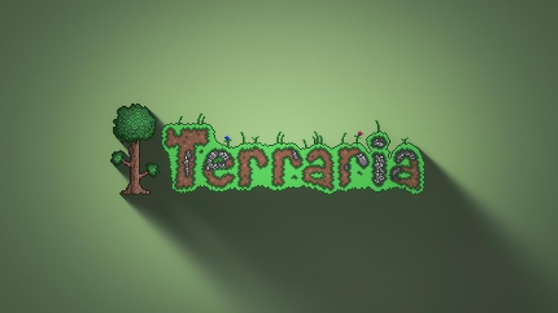

Terraria

Год выпуска: 2011
Жанр: Песочница, Приключения, Экшен
Разработчик: Re-Logic
Издатель: Re-Logic, 505 Games
Платформа: PC, PlayStation, Xbox, Switch, Android, iOS
Язык интерфейса: Русский, Английский
Описание
Terraria — это двухмерная приключенческая песочница, в которой упор сделан на исследование подземного мира, прокачку персонажа и битвы с кучей разных боссов. Сначала ты появляешься с базовыми инструментами, рубишь деревья, строишь дома для NPC-торговцев и спускаешься всё глубже под землю в поисках редкой руды и артефактов. В игре сотни видов оружия, брони и аксессуаров, а после победы над "Стеной плоти" мир переходит в хардмод с новыми биомами и ещё более сложными боссами.
Системные требования
Минимальные
ОС: Windows XP / Vista / 7 / 10
Процессор: 2.0 ГГц
Оперативная память: 2.5 ГБ
Видеокарта: 128 МБ видеопамяти
Место на диске: 200 МБ
Рекомендуемые
ОС: Windows 7 / 8 / 10 / 11
Процессор: Dual Core 3.0 ГГц
Оперативная память: 4 ГБ
Видеокарта: 256 МБ видеопамяти
Место на диске: 500 МБ
Оценка и рецензии
Думал это просто 2D-майнкрафт, а оказалось тут боссов и оружия в десять раз больше. Прошли с другом на эксперте, кайфанули.
За свои деньги просто топ. Без википедии поначалу сложно понять, что крафтить, но когда разберёшься — затягивает на сотни часов.